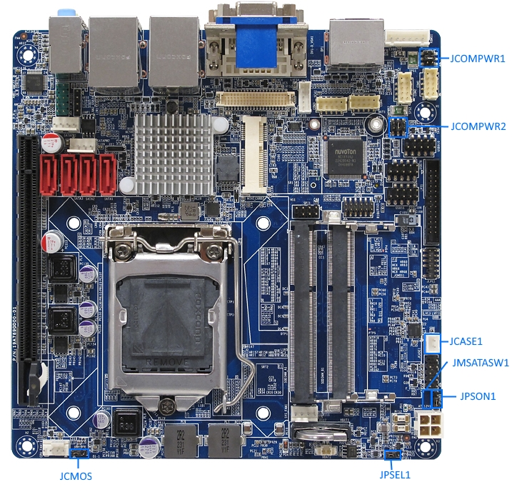

Jumpers & Wiring¶
Wiring¶
| Connection To: | Type: |
| Backplane | Computer Power |
| Backplane | RS-232 |
| Backplane | RS-232 |
| PointGrey BlackFly Left | USB 3.0 |
| PointGrey BlackFly Right | USB 3.0 |
| PointGrey BlackFly Down | USB 3.0 |
| LORD MicroStrain IMU-3DM-GX4 | USB 3.0 |
| Depth Sensor | USB 2.0 |
Jumper Configuration¶
| Name | Setting for AUV | Pins Jumped | Notes |
| Clear CMOS (JCMOS1) | Normal (Default) | 1 - 2 | Use to reset if board overheats and locks. |
| AT/ATX Power Mode Select (PSON1) | AT Mode | 1 - 2 | Boot on power (bypass button) |
| Chassis Intrusion Connector (JCASE1) | Default | 1 - 2 | Leave jumper on connector |
| COM1/COM2 RI/+5V/+12V Mode Select (JCOMPWR1) | 12V | 3 - 4 | |
| COM3/COM4 RI/+5V/+12V Mode Select(JCOMPWR2) | 12V | 3 - 4 | |
| M-SATA/mini PCIe Select (JMSATASW1) | MSATA | 1 - 2 | |
| DC-In Power Source Select (JPSEL1) | 12V | 2 - 3 |
Boot Config¶
sudo nano /etc/default/grub
GRUB_CMDLINE_LINUX=””
becomes:
GRUB_CMDLINE_LINUX=”text usbcore.usbfs_memory_mb=1000”
Uncomment:
#GRUB_TERMINAL=console
sudo update-grub
Computer Boot Procedure Outside of Vehicle¶
- Check that the mother board is set to 12V mode. See: http://store.enochsystems.com/resources/techdocs/2014/MX87QD_Manual_V1.0.pdf#page=36
- Attach power cord (frayed ends to molex connector) to binding post terminals on Power Supply
- Use Channel 1 & Channel 2 in parallel
- Plug in Power Supply
- Set supply to CV (Constant Voltage)
- Turn current dial until the indicator LED nearby lights up green. This indicates that it is in CV mode.
- Set supply Voltage to 12.0V
- Connect power cord to mother board.
- Computer should boot.
- To launch GUI: sudo service lightdm start